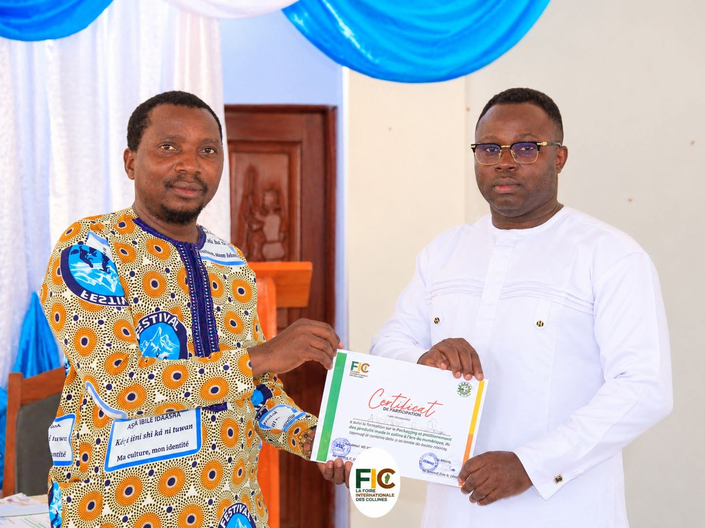

Une dynamique soutenue et accompagnée
La réussite d’une initiative repose aussi sur la mobilisation de plusieurs acteurs. La formation sur le packaging a bénéficié du soutien des autorités locales, des médias et des plateformes numériques...
Lire la suite sur Facebook →